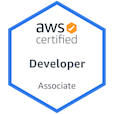

Passionate about breaking things and reconstructing them to be more secure, resilient & user friendly. My DevSecOps experience helps me understand security from a developer's perspective and allows me to architect my projects in a way that's as secure as it is efficient.
Some of my duties include: - providing security reviews for alexa and alexa based services - advising teams on correct components that deliver security features like key management, authentication, encryption, etc. - Recommending and developoing security focused-tools to help product teams prevent security misconfigurations & vulnerabilities - Conducting white box secure code review as well as support the review of static & dynamic analysis reports.
Securing cloud deployed applications and services by building monitoring systems, doing least-privilege designs to limit the blast radius of compromises, scanning networks, and instrumenting servers and containers. The work involves software engineering, involving provisioning, orchestration, automation, and repeatability. As well as penetration testing, threat modeling and helping define security policy as we build out the security department at Qumulo. Unfortunately my entire team was impacted by layoffs.
Corporate Information Security - Cloud Security
My primary duties involved building tools and developing creative solutions to seamlessly integrate security into the software development lifecycle. The nature of this role requires adaptability and a readiness to tackle problems across various subjects and technologies.
TechOps - Windows Platform Engineering
I worked with the Active Directory team for my final rotation in an 18 month rotational engineer program with Nike. I developed enhancements to the AD REST API to create and manage AD objects using C# and Powershell. I also set up the authentication & authorization functions for any users attempting to access the API.
Corporate Information Security - Application Security
I was part of an Application Security team that was developing a next gen security scanning tool for internal use. I created a user interface for the API, allowing for more developers and non-developers to gain better insight into the security of their applications as well as equipping them with the knowledge to create more secure applications in the future. I also helped in building Remnant, a tool designed to help streamline the process of secure by design app development within Nike. Primarily working with AWS SAM and Vue.js In this role, I learned a lot about Static Application Security Testing, Dynamic Application Security Testing, Software Composition Analysis and the Secure Software Development Lifecycle. All part of an initiative to introduce security best practices earlier into the development process across the enterprise to avoid future pitfalls.
Corporate Functions & Converse - SAP Automation Engineering
Our team specialized in applying the DevOps mindset to SAP servers in AWS & Azure. We were developing a self service SAP server build request web app. I developed backend Node.js scripts that took user form entry information and wrote it to a PDF on the fly. This helped save a lot of time by allowing servers to provision resources more quickly and correctly as opposed to the previous method which relied on requests manually sent in from SAP dev teams I also regularly set up, configured & deployed various SAP servers in AWS using Terraform and Puppet to ensure compliance and reliability of our SAP systems for the dev teams.
Infrastructure & Operations Security
I assisted in vulnerability management automation with the internal security operations team.
I created a vulnerability remediation reporting feature in Jira for an enterprise wide vulnerability detection tool.
I learned how to harden AWS environments & detect irregular behavior using AWS services like GuardDuty, Config and Cloudwatch
I developed penetration testing skills by working closely with teammates to hack vulnerable virtual machines. I also learned how to leverage Burpsuite to find and exploit vulnerabilities within web apps. I learned a little about physical penetration testing as well.
I was one of the founding members of the Lewis & Clark ACM Chapter in 2018. I also conducted the very first Hackathon in 2018, Piohacks, which you can read more about here if you're interested
 AWS Certified Developer Associate - Validation Number: 7BBJB9TJBFV4QLW0
React, Redux, Express, MongoDB, Stripe, Heroku
Full stack web development practice project. Allows a user to create surveys using credits that can be purchased and used to send email surveys to multiple recipients.
Source
Python
Simple Python GUI designed to give a user insight into devices connected to their local network
Source
AWS, Kubernetes, NodeJs, Postgres, Redis
An exercise in multi-container deployments, Kubernetes, and creating production grade pipelines for a NodeJS app leveraging multiple tools
Source